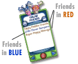
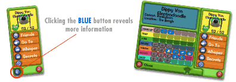

Use the Friends list to add a Toon to your list or stop being friends with a Toon.
You can also make a secret for a friend or type in a friend’s secret here, allowing
you to chat openly with them. Open chat is when you can type messages to friends
with the keyboard instead of having to use the messages in the SpeedChat menu.
|

Friends you can only SpeedChat with are shown in red, friends you can SpeedChat and
chat openly with are shown in blue.
|
|
The Friends detail panel has lots of information. On the main panel you can see
your friend's Laff meter. It shows their Laff limit and how many Laff points they
have at that moment.
|
|  |
Clicking on the blue arrow button at the bottom of the detail panel shows even more.
Here you can see what neighborhood and district your friend is in and what gags your
friend can use.
|
|
Every Toon knows the green chat button is SpeedChat, and you can use it to talk to
any Toon in Toontown. So what is the blue chat button for anyway?
The blue chat button in the upper left of the screen lets you chat openly with your
secret friends. To make a secret friend, click on the Friends button. When your
Friends panel opens, click on the blue Secrets button in the top right corner.
In the Secrets panel you can create a secret for one of your real world friends,
or type in a secret a real world friend has given you. When one of you has typed
in the other’s secret, you can chat openly in Toontown.
|